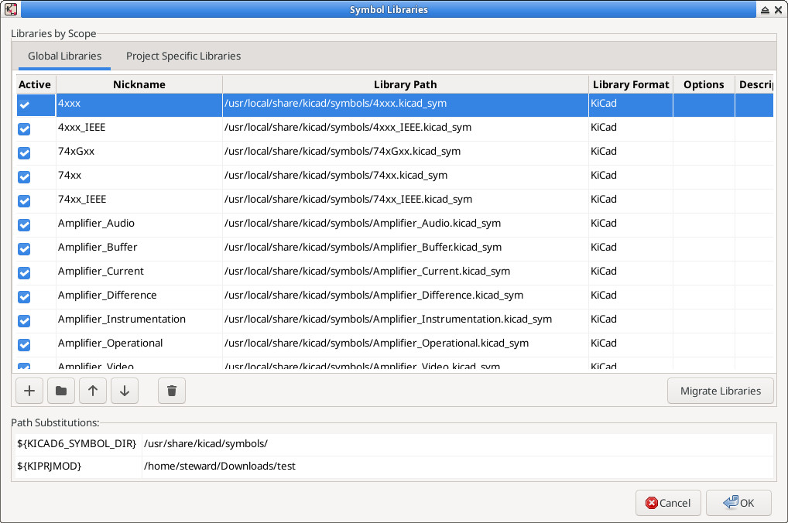

參考資訊：
https://gitlab.com/kicad/libraries/kicad-symbols
$ cd $ git clone https://gitlab.com/kicad/libraries/kicad-symbols --recursive $ cd kicad-symbols $ git checkout 6.0.11 $ mkdir build $ cd build $ cmake .. $ sudo make install
Preferences => Manage Symbol Libraries... => Global Libraries => Add existing library to table => /usr/local/share/kicad/sumbols/
